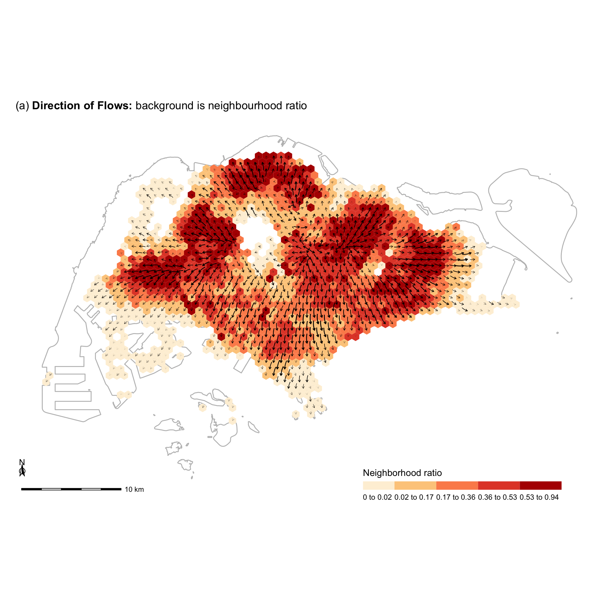
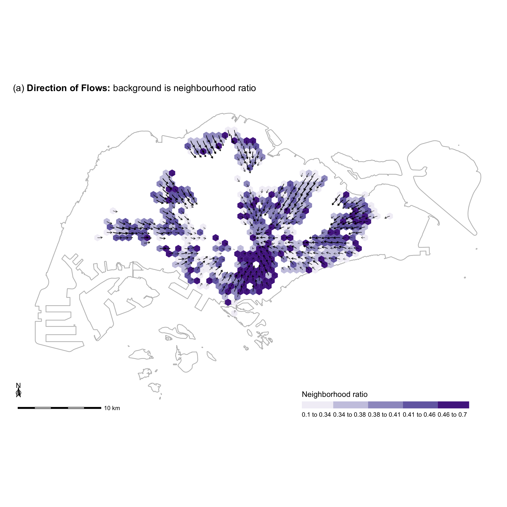
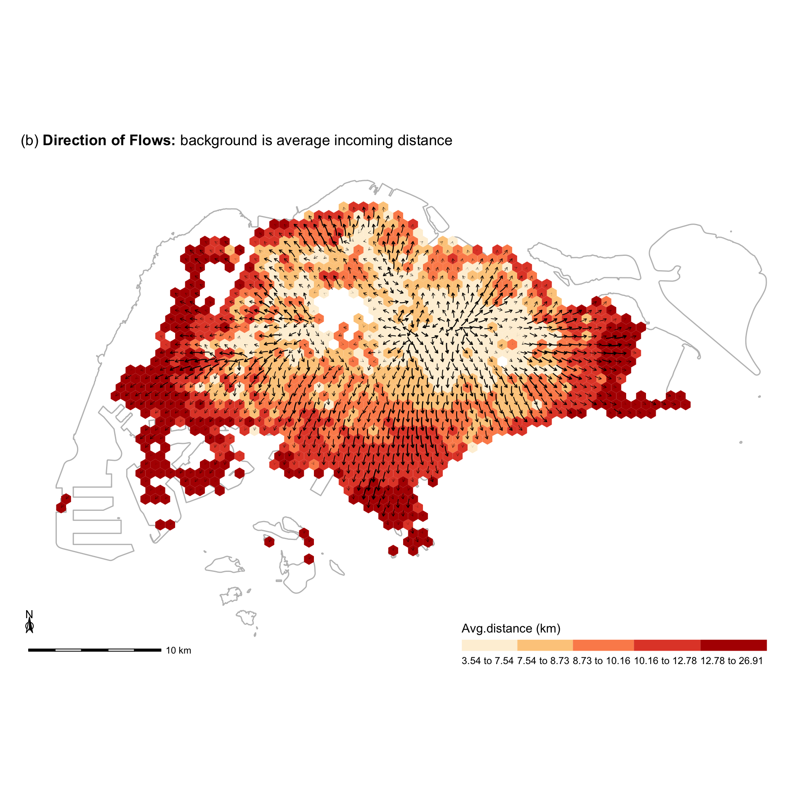
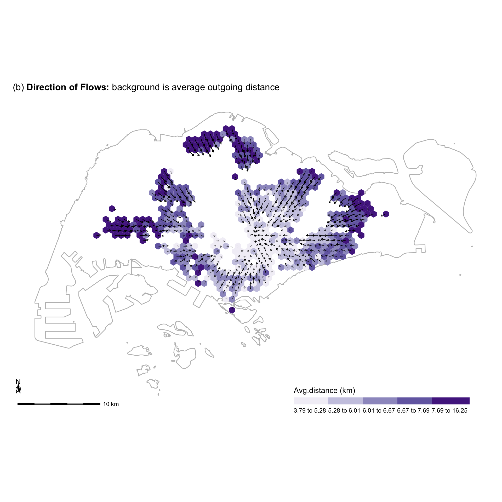
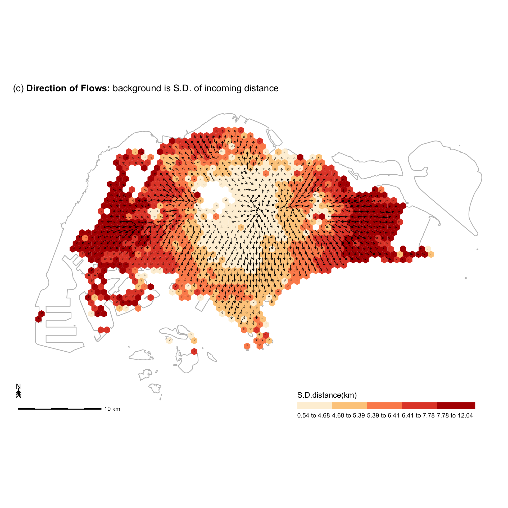
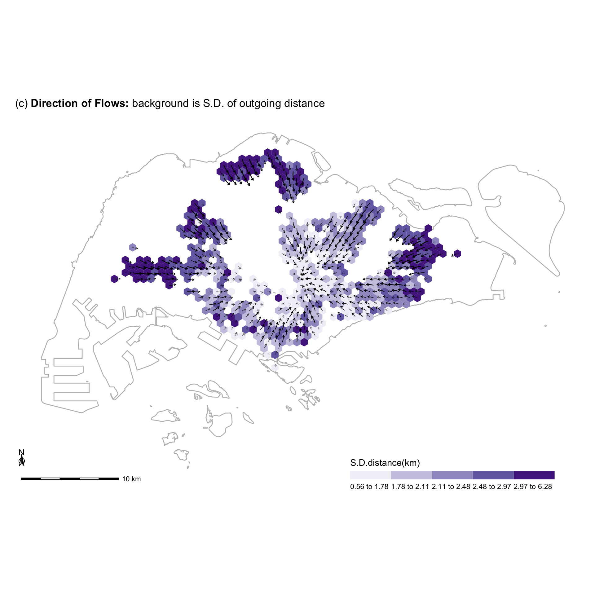
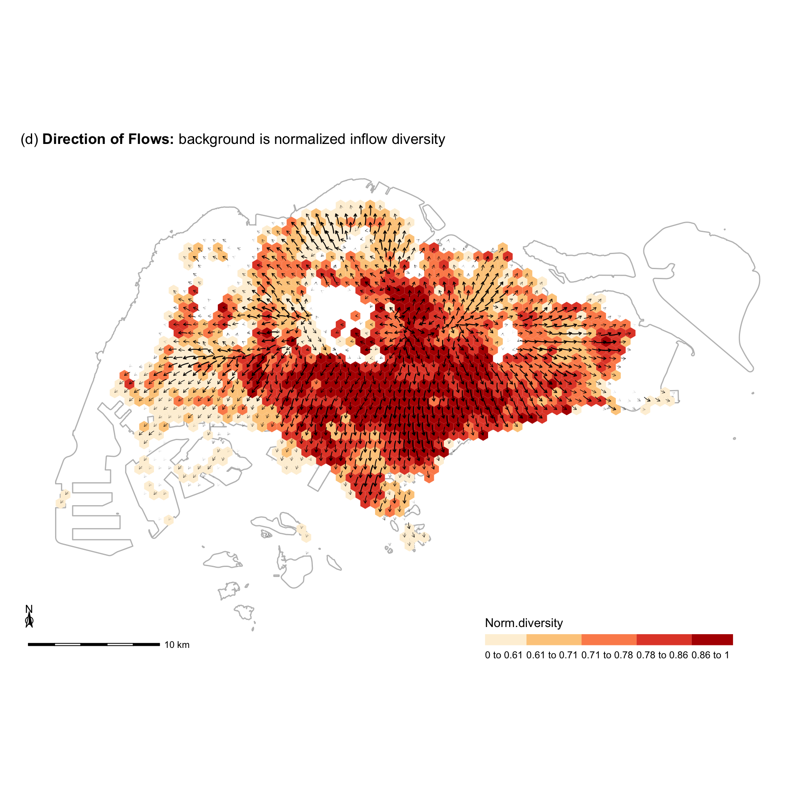
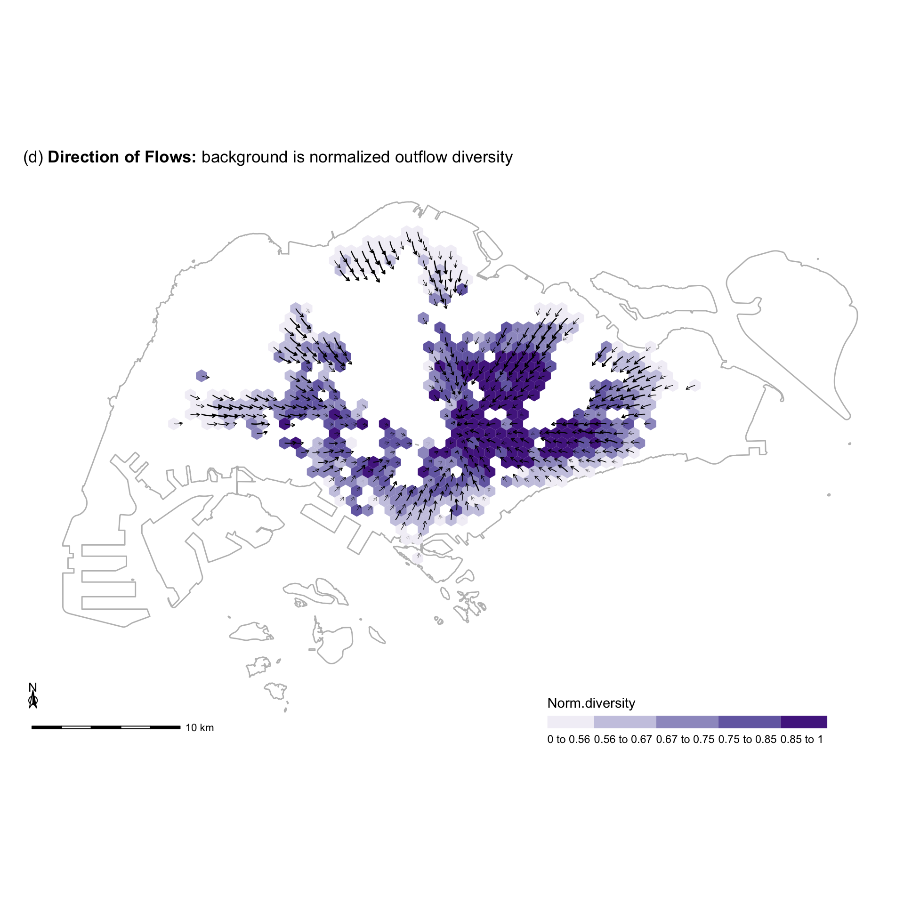

Last updated: 2021-05-25
Checks: 7 0
Knit directory: entangledfootprints/
This reproducible R Markdown analysis was created with workflowr (version 1.6.2). The Checks tab describes the reproducibility checks that were applied when the results were created. The Past versions tab lists the development history.
Great! Since the R Markdown file has been committed to the Git repository, you know the exact version of the code that produced these results.
Great job! The global environment was empty. Objects defined in the global environment can affect the analysis in your R Markdown file in unknown ways. For reproduciblity it’s best to always run the code in an empty environment.
The command set.seed(20210524) was run prior to running the code in the R Markdown file. Setting a seed ensures that any results that rely on randomness, e.g. subsampling or permutations, are reproducible.
Great job! Recording the operating system, R version, and package versions is critical for reproducibility.
Nice! There were no cached chunks for this analysis, so you can be confident that you successfully produced the results during this run.
Great job! Using relative paths to the files within your workflowr project makes it easier to run your code on other machines.
Great! You are using Git for version control. Tracking code development and connecting the code version to the results is critical for reproducibility.
The results in this page were generated with repository version b57617a. See the Past versions tab to see a history of the changes made to the R Markdown and HTML files.
Note that you need to be careful to ensure that all relevant files for the analysis have been committed to Git prior to generating the results (you can use wflow_publish or wflow_git_commit). workflowr only checks the R Markdown file, but you know if there are other scripts or data files that it depends on. Below is the status of the Git repository when the results were generated:
Ignored files:
Ignored: .DS_Store
Ignored: .Rproj.user/
Ignored: data/.DS_Store
Untracked files:
Untracked: analysis/bibliography.bib
Untracked: code/flow_mapping.R
Untracked: code/viz.R
Untracked: data/data/
Untracked: data/derived_data/
Untracked: data/photos/
Untracked: data/raw_data/
Unstaged changes:
Modified: README.md
Modified: analysis/_site.yml
Modified: analysis/index.Rmd
Deleted: code/README.md
Note that any generated files, e.g. HTML, png, CSS, etc., are not included in this status report because it is ok for generated content to have uncommitted changes.
These are the previous versions of the repository in which changes were made to the R Markdown (analysis/009-draw-flow-maps.Rmd) and HTML (docs/009-draw-flow-maps.html) files. If you’ve configured a remote Git repository (see ?wflow_git_remote), click on the hyperlinks in the table below to view the files as they were in that past version.
| File | Version | Author | Date | Message |
|---|---|---|---|---|
| Rmd | b57617a | chenqingqing | 2021-05-25 | feat: calculate direction of flows |
Flows into or out of a grid cell can happen in all cardinal directions and with different intensities and distances. Visualizing the entire network of these connections is not very insightful for making neighborhood-level inferences. To address that, we create a single metric that summarizes the overall direction and strength of a flow to or from a neighborhood, inspired by Tobler’s (1981) work on vector fields to display flow patterns.
We first aggregate the sectors of the grid into four zones, with each zone corresponding to a specific angle, relative to ‘East’ (0°): the North East (NE) zone (45°), North West (NW) zone (135°), South West (SW) zone (225°), and South East (SE) zone (315°). As such, we can use four vectors to represent a flow to and from the four zones. The direction of each vector represents where visitors come from or where locals go out to, and the magnitude of the vector denotes the number of people in that flow. The resultant vector (i.e., the sum of the four vectors) is used to represent the overall flow direction of each grid cell. To visualize all resulting vectors uniformly on a single map, we log-transform the length of each vector (to prevent some arrows from being much longer than others). Furthermore, we encode the number of users active in the grid with the width of the arrows.
# sg boundary
sg_boundary <- readRDS(here("data/derived_data/sg_boundary.rds"))
# hexagonal grids
grids <- read_sf(here("data/derived_data/spatial_hex_grid.shp"), quiet = T) %>%
st_transform(crs = 3414)
# grid centroids
grid_centroids <- grids %>% st_centroid()
# divided sectors
grid_sectors <- readRDS(here("data/derived_data/grid_sectors.rds"))
# inflow and outflow distance
dist_visitors <- readRDS(here("data/derived_data/dist_visitor_points.rds"))
dist_locals <- readRDS(here("data/derived_data/dist_local_points.rds"))
# inflow and outflow diversity
inflow_diversity <- readRDS(here("data/derived_data/inflow_diversity.rds"))
outflow_diversity <- readRDS(here("data/derived_data/outflow_diversity.rds")) if(file.exists(here("data/derived_data/inflow_vectors.rds"))){
inflow_vectors <- readRDS(here("data/derived_data/inflow_vectors.rds"))
}else{
dist_visitors_nest <- dist_visitors %>%
nest(data = c(u_id, home, created_at, dist_hm2grid, dist_hm2grid_km))
inflow_vectors <- do.call(bind_rows, map2(dist_visitors_nest$grid_id, dist_visitors_nest$data, with_progress(cal_inflow_vectors)))
saveRDS(inflow_vectors, file = here("data/derived_data/inflow_vectors.rds"))
}
# scale inflow vectors
inflow_vectors_scaled <- inflow_vectors %>%
mutate(magnitude_rescaled = scales::rescale(log(magnitude))) %>%
mutate(start_x = X + 1 + magnitude_rescaled * 1000 * cos(angle),
start_y = Y + 1 + magnitude_rescaled * 1000 * sin(angle),
total_user = scales::rescale(log(total_user)))
head(inflow_vectors_scaled)# A tibble: 6 x 9
X Y grid_id angle magnitude total_user magnitude_rescaled start_x
<dbl> <dbl> <dbl> <dbl> <dbl> <dbl> <dbl> <dbl>
1 3043. 25492. 8 0.785 12 0.140 0.284 3244.
2 3418. 26141. 14 0.785 15 0.168 0.309 3637.
3 7168. 33935. 123 0.620 12.2 0.159 0.285 7401.
4 7543. 34585. 135 0.574 28.6 0.272 0.383 7865.
5 7918. 33935. 147 0.700 35.1 0.286 0.406 8229.
6 7918. 35234. 148 0.537 81.5 0.407 0.502 8350.
# … with 1 more variable: start_y <dbl>if(file.exists(here("data/derived_data/outflow_vectors.rds"))){
outflow_vectors <- readRDS(here("data/derived_data/outflow_vectors.rds"))
}else{
dist_locals_nest <- dist_locals %>%
nest(data = c(u_id, grid_id, created_at, dist_hm2grid, dist_hm2grid_km))
outflow_vectors <- do.call(bind_rows, map2(dist_locals_nest$home, dist_locals_nest$data, with_progress(cal_outflow_vectors)))
saveRDS(outflow_vectors, file = here("data/derived_data/outflow_vectors.rds"))
}
# scale outflow vectors
outflow_vectors_scaled <- outflow_vectors %>%
mutate(magnitude_rescaled = scales::rescale(log(magnitude)),
end_x = X + 1 + magnitude_rescaled * 1000 * cos(angle),
end_y = Y + 1 + magnitude_rescaled * 1000 * sin(angle),
total_user = scales::rescale(log(total_user)))
head(outflow_vectors_scaled)# A tibble: 6 x 9
X Y home_id angle magnitude total_user magnitude_rescaled end_x
<dbl> <dbl> <dbl> <dbl> <dbl> <dbl> <dbl> <dbl>
1 10168. 35234. 234 0.0891 667. 0.477 0.592 10758.
2 11293. 35884. 286 -0.0182 777. 0.515 0.618 11912.
3 11293. 37183. 287 -0.374 1020. 0.560 0.666 11914.
4 11668. 36533. 304 -0.214 567. 0.437 0.563 12219.
5 12043. 35884. 321 -0.103 4729. 0.914 0.937 12976.
6 12043. 38482. 323 -0.201 491. 0.414 0.538 12570.
# … with 1 more variable: end_y <dbl># mean inflow distance
bg_dist_inflow <- dist_visitors %>%
group_by(grid_id, u_id) %>%
dplyr::summarise(mean_dist_user = mean(dist_hm2grid_km)) %>%
group_by(grid_id) %>%
dplyr::summarise(mean_dist_grid = mean(mean_dist_user),
sd_dist_grid = sd(mean_dist_user)) %>%
mutate(cut_mean_dist_grid = cut(mean_dist_grid,
breaks=c(quantile(mean_dist_grid, probs = seq(0, 1, by = 0.20))), include.lowest=TRUE),
cut_sd_dist_grid = cut(sd_dist_grid,
breaks = c(quantile(sd_dist_grid, probs = seq(0, 1, by = 0.2))), include.lowest = TRUE)) %>%
left_join(., grids) %>%
st_as_sf()
# mean outflow distance
bg_dist_outflow <- dist_locals %>%
group_by(home, u_id) %>%
dplyr::summarise(mean_dist_user = mean(dist_hm2grid_km)) %>%
group_by(home) %>%
dplyr::summarise(mean_dist_grid = mean(mean_dist_user),
sd_dist_grid = sd(mean_dist_user)) %>%
mutate(cut_mean_dist_grid = cut(mean_dist_grid,
breaks=c(quantile(mean_dist_grid, probs = seq(0, 1, by = 0.20))), include.lowest=TRUE),
cut_sd_dist_grid = cut(sd_dist_grid,
breaks = c(quantile(sd_dist_grid, probs = seq(0, 1, by = 0.2))), include.lowest = TRUE)) %>%
left_join(., grids, by = c("home" = "grid_id")) %>%
st_as_sf()if(file.exists(here("data/derived_data/neigh_ratio_inflow.rds"))){
bg_neighRatio_inflow <- readRDS(here("data/derived_data/neigh_ratio_inflow.rds")) %>%
dplyr::select(grid_id, type, ratio_divide_sumWeigh) %>%
na.omit() %>%
spread(key = "type", value = "ratio_divide_sumWeigh") %>%
replace(., is.na(.), 0) %>%
left_join(., grids) %>%
st_as_sf(crs = 3414) %>%
mutate(ratio = cut(inner, breaks=c(quantile(inner, probs = seq(0, 1, by = 0.20))), include.lowest=TRUE))
}else{
dist_visitors_weight <- dist_visitors %>%
dplyr::select(grid_id, u_id, home, created_at) %>%
group_by(u_id) %>%
mutate(total_tweets = n(), weight = 1/total_tweets) %>%
ungroup()
neigh_ratio_inflow <- do.call(rbind, map(dist_visitors_nest$grid_id, with_progress(function(x) cal_neigh_ratio(dist_visitors_weight, x, user_type = "visitor"))))
saveRDS(neigh_ratio_inflow, file = here("data/derived_data/neigh_ratio_inflow.rds"))
}
if(file.exists(here("data/derived_data/neigh_ratio_outflow.rds"))){
bg_neighRatio_outflow <- readRDS(here("data/derived_data/neigh_ratio_outflow.rds")) %>%
dplyr::select(home, type, ratio_divide_sumWeigh) %>%
na.omit() %>%
spread(key = "type", value = "ratio_divide_sumWeigh") %>%
replace(., is.na(.), 0) %>%
left_join(., grids, by = c("home" = "grid_id")) %>%
st_as_sf(crs = 3414) %>%
mutate(ratio = cut(inner, breaks=c(quantile(inner, probs = seq(0, 1, by = 0.20))), include.lowest=TRUE))
}else{
dist_locals_weight <- dist_locals %>%
dplyr::select(home, u_id, grid_id, created_at) %>%
group_by(u_id) %>%
mutate(total_tweets = n(), weight = 1/total_tweets) %>%
ungroup()
neigh_ratio_outflow <- do.call(rbind, map(dist_locals_nest$home, with_progress(function(x) cal_neigh_ratio(dist_locals_weight, x, user_type = "local"))))
saveRDS(neigh_ratio_outflow, file = here("data/derived_data/neigh_ratio_outflow.rds"))
}bg_div_inflow <- inflow_diversity %>%
dplyr::select(grid_id, norm_div_shannon) %>%
mutate(cut_div = cut(norm_div_shannon, breaks=c(quantile(norm_div_shannon, probs = seq(0, 1, by = 0.20))), include.lowest=TRUE))
bg_div_outflow <- outflow_diversity %>%
dplyr::select(grid_id, norm_div_shannon) %>%
mutate(cut_div = cut(norm_div_shannon, breaks=c(quantile(norm_div_shannon, probs = seq(0, 1, by = 0.20))), include.lowest=TRUE))viz_flows(bg_neighRatio_inflow, inflow_vectors_scaled,
bg.fill.var = "ratio",
quantile.var = "inner",
palette = "OrRd",
start.x = "start_x", start.y = "start_y",
end.x = "X", end.y = "Y",
title = expression(paste("(a) ", bold("Direction of Flows: "), "background is neighbourhood ratio")),
legend.nm = "Neighborhood ratio")
viz_flows(bg_neighRatio_outflow, outflow_vectors_scaled,
quantile.var = "inner",
palette = "Purples",
bg.fill.var = "ratio",
start.x = "X", start.y = "Y",
end.x = "end_x", end.y = "end_y",
title = expression(paste("(a) ", bold("Direction of Flows: "), "background is neighbourhood ratio")),
legend.nm = "Neighborhood ratio")
viz_flows(bg_dist_inflow, inflow_vectors_scaled,
bg.fill.var = "cut_mean_dist_grid",
quantile.var = "mean_dist_grid",
palette = "OrRd",
start.x = "start_x", start.y = "start_y",
end.x = "X", end.y = "Y",
title = expression(paste("(b) ", bold("Direction of Flows: "), "background is average incoming distance")),
legend.nm = "Avg.distance (km)")
viz_flows(bg_dist_outflow, outflow_vectors_scaled,
bg.fill.var = "cut_mean_dist_grid",
quantile.var = "mean_dist_grid",
palette = "Purples",
start.x = "X", start.y = "Y",
end.x = "end_x", end.y = "end_y",
title = expression(paste("(b) ", bold("Direction of Flows: "), "background is average outgoing distance")),
legend.nm = "Avg.distance (km)")
viz_flows(bg_dist_inflow, inflow_vectors_scaled,
bg.fill.var = "cut_sd_dist_grid",
quantile.var = "sd_dist_grid",
palette = "OrRd",
start.x = "start_x", start.y = "start_y",
end.x = "X", end.y = "Y",
title = expression(paste("(c) ", bold("Direction of Flows: "), "background is S.D. of incoming distance")),
legend.nm = "S.D.distance(km)")
viz_flows(bg_dist_outflow, outflow_vectors_scaled,
bg.fill.var = "cut_sd_dist_grid",
quantile.var = "sd_dist_grid",
palette = "Purples",
start.x = "X", start.y = "Y",
end.x = "end_x", end.y = "end_y",
title = expression(paste("(c) ", bold("Direction of Flows: "), "background is S.D. of outgoing distance")),
legend.nm = "S.D.distance(km)")
viz_flows(bg_div_inflow %>% filter(grid_id %in% inflow_vectors_scaled$grid_id), inflow_vectors_scaled,
bg.fill.var = "cut_div",
quantile.var = "norm_div_shannon",
palette = "OrRd",
start.x = "start_x", start.y = "start_y",
end.x = "X", end.y = "Y",
title = expression(paste("(d) ", bold("Direction of Flows: "), "background is normalized inflow diversity")),
legend.nm = "Norm.diversity")
viz_flows(bg_div_outflow %>% filter(grid_id %in% outflow_vectors_scaled$home_id), outflow_vectors_scaled,
bg.fill.var = "cut_div",
quantile.var = "norm_div_shannon",
palette = "Purples",
start.x = "X", start.y = "Y",
end.x = "end_x", end.y = "end_y",
title = expression(paste("(d) ", bold("Direction of Flows: "), "background is normalized outflow diversity")),
legend.nm = "Norm.diversity")
sessionInfo()R version 4.0.4 (2021-02-15)
Platform: x86_64-apple-darwin17.0 (64-bit)
Running under: macOS Big Sur 10.16
Matrix products: default
BLAS: /Library/Frameworks/R.framework/Versions/4.0/Resources/lib/libRblas.dylib
LAPACK: /Library/Frameworks/R.framework/Versions/4.0/Resources/lib/libRlapack.dylib
locale:
[1] en_US.UTF-8/en_US.UTF-8/en_US.UTF-8/C/en_US.UTF-8/en_US.UTF-8
attached base packages:
[1] stats graphics grDevices utils datasets methods base
other attached packages:
[1] here_1.0.1 ggspatial_1.1.5 purrrogress_0.1.1 tmap_3.3-1
[5] sf_0.9-7 forcats_0.5.1 stringr_1.4.0 dplyr_1.0.5
[9] purrr_0.3.4 readr_1.4.0 tidyr_1.1.3 tibble_3.1.0
[13] ggplot2_3.3.3 tidyverse_1.3.0
loaded via a namespace (and not attached):
[1] fs_1.5.0 lubridate_1.7.10 RColorBrewer_1.1-2
[4] httr_1.4.2 rprojroot_2.0.2 tools_4.0.4
[7] backports_1.2.1 bslib_0.2.4 utf8_1.1.4
[10] R6_2.5.0 KernSmooth_2.23-18 DBI_1.1.1
[13] colorspace_2.0-0 raster_3.4-5 withr_2.4.1
[16] sp_1.4-5 tidyselect_1.1.0 leaflet_2.0.4.1
[19] compiler_4.0.4 git2r_0.28.0 leafem_0.1.3
[22] cli_2.3.1 rvest_0.3.6 testextra_0.1.0.9000
[25] xml2_1.3.2 sass_0.3.1 scales_1.1.1
[28] classInt_0.4-3 digest_0.6.27 rmarkdown_2.7
[31] base64enc_0.1-3 dichromat_2.0-0 pkgconfig_2.0.3
[34] htmltools_0.5.1.1 highr_0.8 dbplyr_2.1.0
[37] htmlwidgets_1.5.3 rlang_0.4.10 readxl_1.3.1
[40] rstudioapi_0.13 farver_2.1.0 jquerylib_0.1.3
[43] generics_0.1.0 jsonlite_1.7.2 crosstalk_1.1.1
[46] magrittr_2.0.1 Rcpp_1.0.6 munsell_0.5.0
[49] fansi_0.4.2 abind_1.4-5 lifecycle_1.0.0
[52] stringi_1.5.3 leafsync_0.1.0 whisker_0.4
[55] yaml_2.2.1 tmaptools_3.1-1 grid_4.0.4
[58] parallel_4.0.4 promises_1.2.0.1 crayon_1.4.1
[61] lattice_0.20-41 stars_0.5-1 haven_2.3.1
[64] hms_1.0.0 knitr_1.31 pillar_1.5.1
[67] codetools_0.2-18 reprex_1.0.0 XML_3.99-0.5
[70] glue_1.4.2 evaluate_0.14 modelr_0.1.8
[73] vctrs_0.3.6 png_0.1-7 httpuv_1.5.5
[76] testthat_3.0.2 pkgcond_0.1.0 cellranger_1.1.0
[79] gtable_0.3.0 postlogic_0.1.0.1 assertthat_0.2.1
[82] xfun_0.21 lwgeom_0.2-5 broom_0.7.5
[85] e1071_1.7-4 later_1.1.0.1 class_7.3-18
[88] viridisLite_0.3.0 workflowr_1.6.2 units_0.6-7
[91] ellipsis_0.3.1 parsetools_0.1.3